数据驱动
用 Python / SQL 把原始数据变成结构化数据集，先定义指标再下结论，让结果可复现。
ABOUT
我是胡睿杰，常州大学计算机科学与技术专业毕业，现于香港城市大学攻读商业人工智能硕士。 三段实习横跨人力资源数据、私募量化与软件开发—— 我习惯把一件事从"拿到原始数据"一路做到"能支撑业务决策"。
毕业设计把条件生成对抗网络做成在线可体验的去雾服务，这个页面本身也是我的一次练习： 原生 JS + GSAP 手工搭建，无框架依赖，托管在腾讯云 CloudBase 上。 我更在意量化验证与落地——协调 100+ 人面试、选股组合跑赢沪深 300、 公众号阅读 10k+，每个结论都有数字支撑。
用 Python / SQL 把原始数据变成结构化数据集，先定义指标再下结论，让结果可复现。
入职半个月摸清期权期货知识并产出策略验证，实习月余融入团队并输出有效内容。
网球协会社长组织 100+ 人次活动，英文可作为工作语言（雅思 7.0），对接内外部资源。
JOURNEY
硕士在读
聚焦机器学习与商业应用场景的结合，探索 AI 技术在数据分析与业务决策中的落地。
本科
主修：数据结构与算法分析、计算机组成与体系结构、计算机网络、操作系统、数据库原理、分布式系统原理与实践等。
技术数据分析
Python + SQL 清洗数千条候选人数据并标准化；搭建漏斗模型筛选候选人，自动化脚本重命名整理简历；Power BI 输出"岗位-候选人匹配度"报表，量化招聘瓶颈。
量化金融
复现 Fama-French 三因子模型验证超额收益；基于聚宽因子库构建江苏省股票打分排名选股组合；对三大股指期权交易策略进行优化验证。
软件开发
参与政务平台 APP 项目：修改功能代码、执行接口测试与黑盒测试，针对性处理不通过的接口；统筹整理技术文档与接口说明。
学生组织 · 社长
制定并推进社团运营规划：新老成员入社管理、网球技术周训排班、成员技术动作学习进度跟进。从 0-1 参与策划校级网球比赛并担任裁判，负责比赛规则修订建议、场地协调与成员动态同步。
学生组织 · 部长
运营学院公众号，担任多篇推文的责任编辑；同时协助学校"现代产业学院"官方公众号的内容排版（美编）。 统筹活动现场摄影、新闻稿撰写与发布维护，产出作品累计阅读 10k+。以下为 8 篇代表推文：
HONORS
按住证书左右拖动浏览（证书上的证件号码已打码）。四六级成绩单备索。
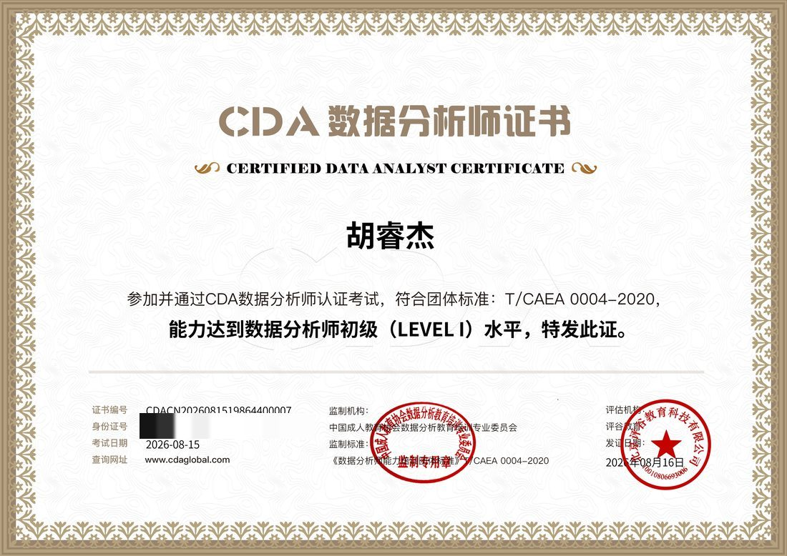
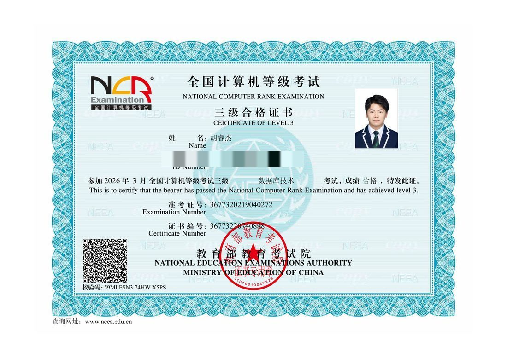
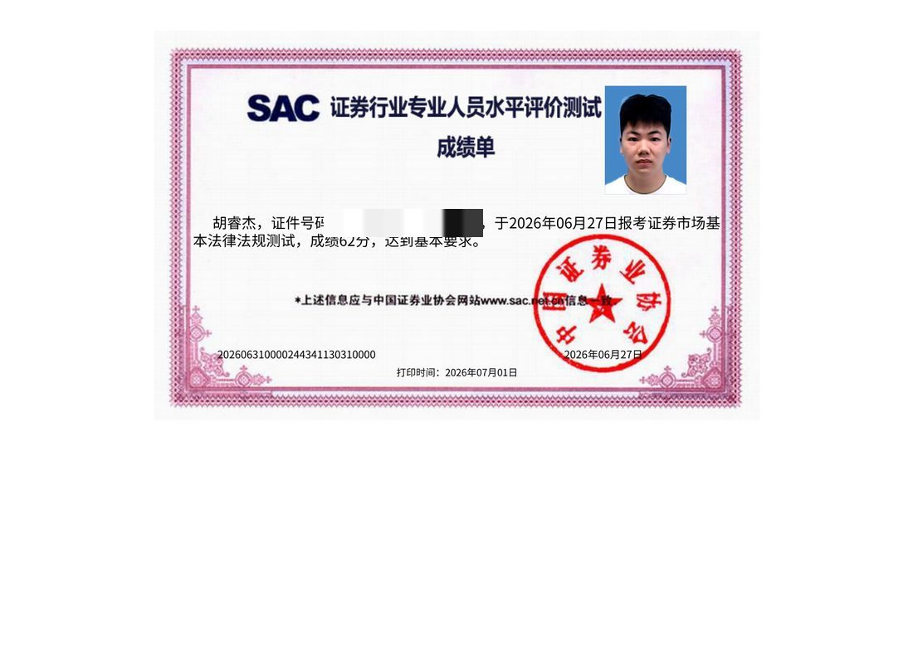
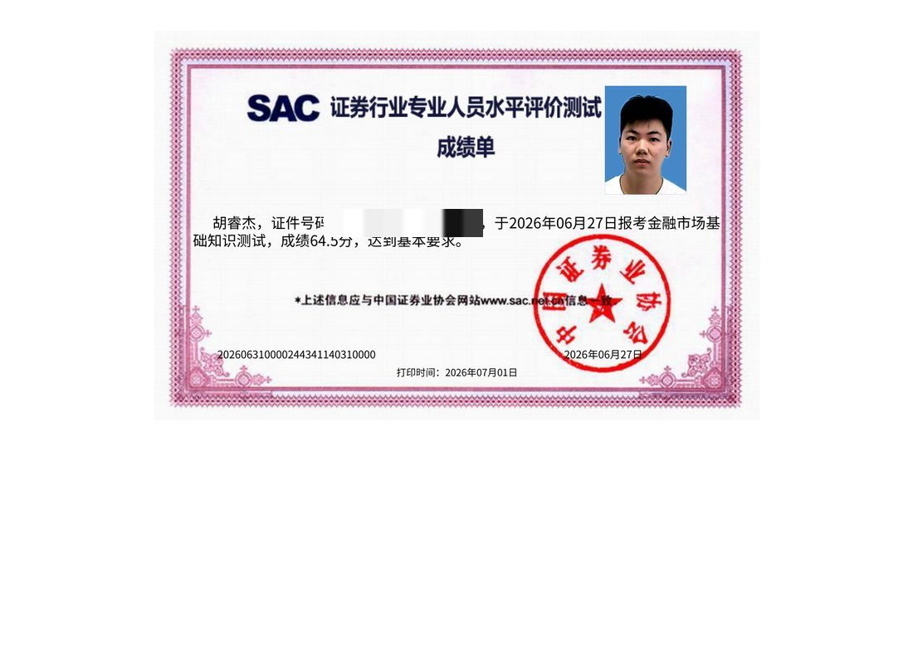
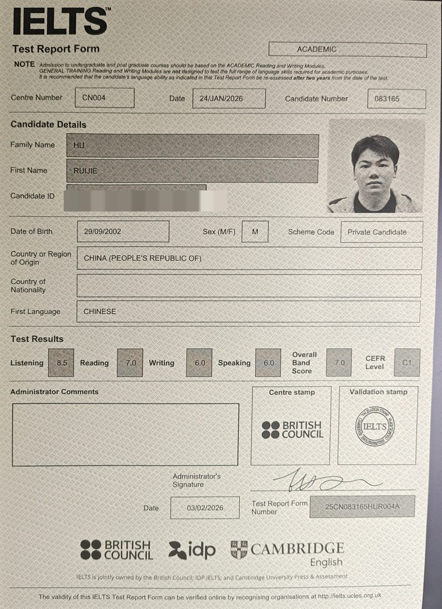
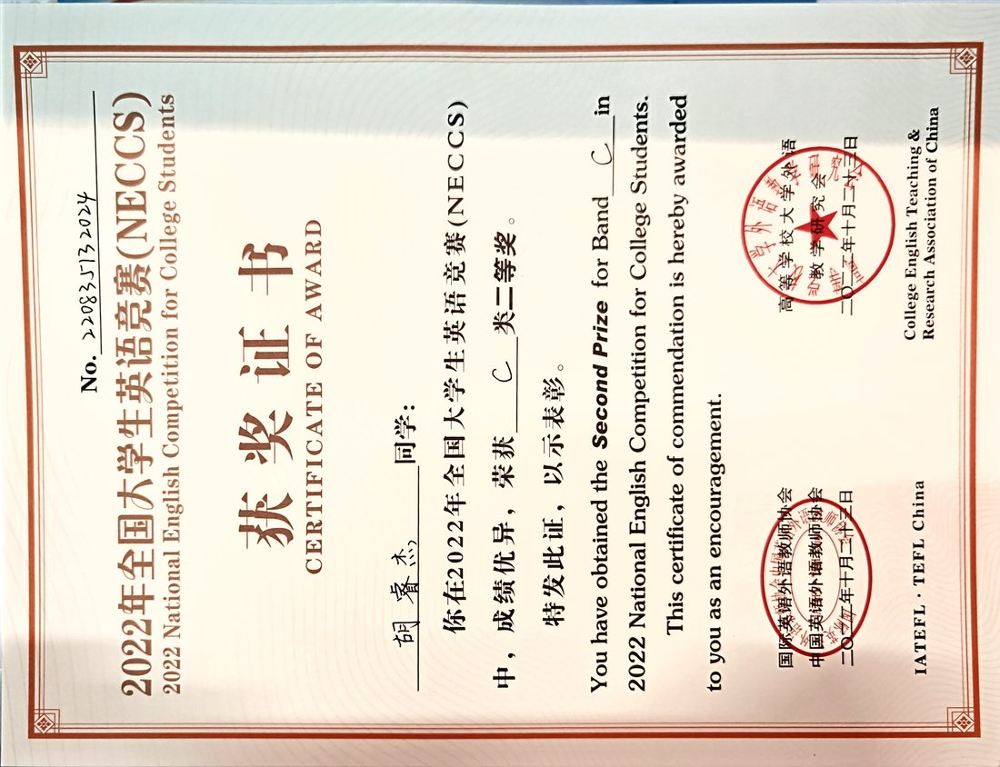
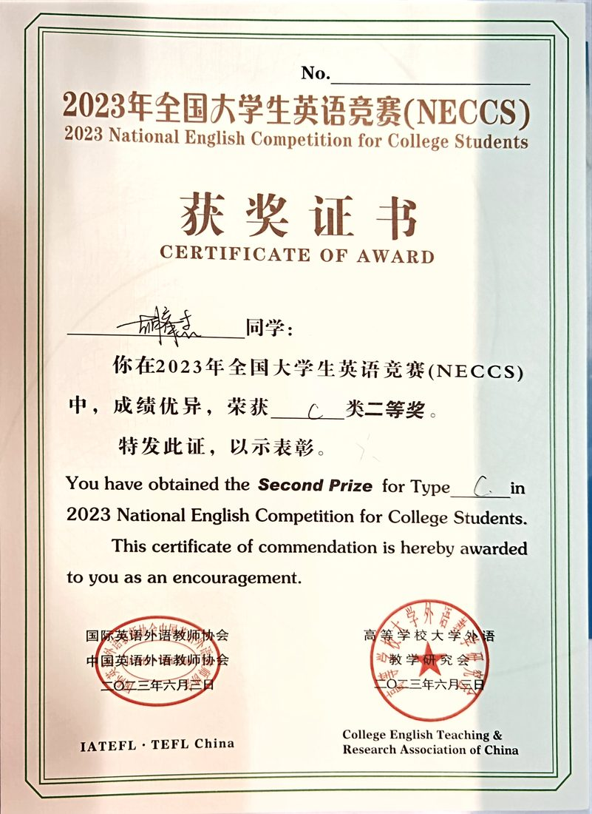
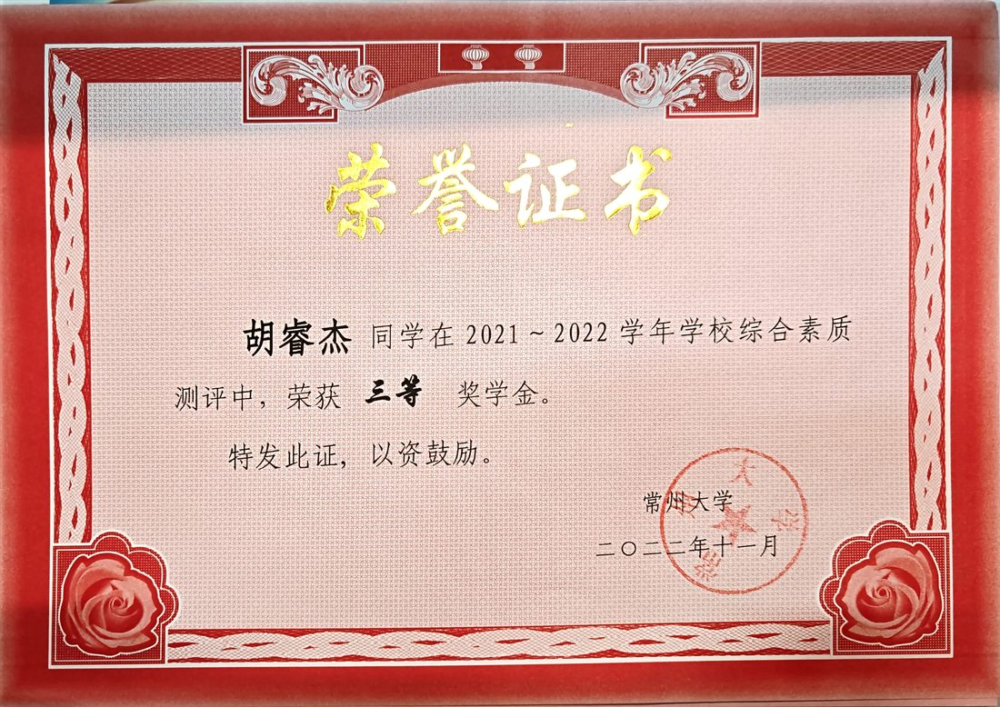
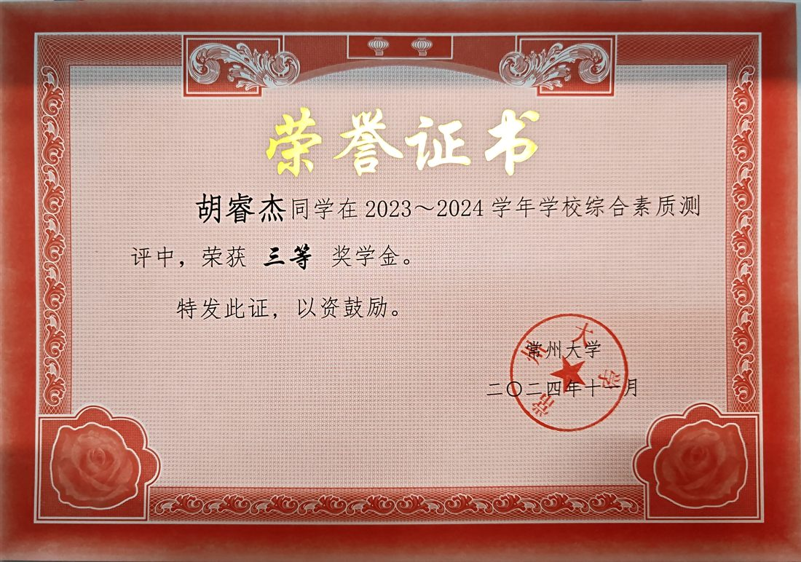
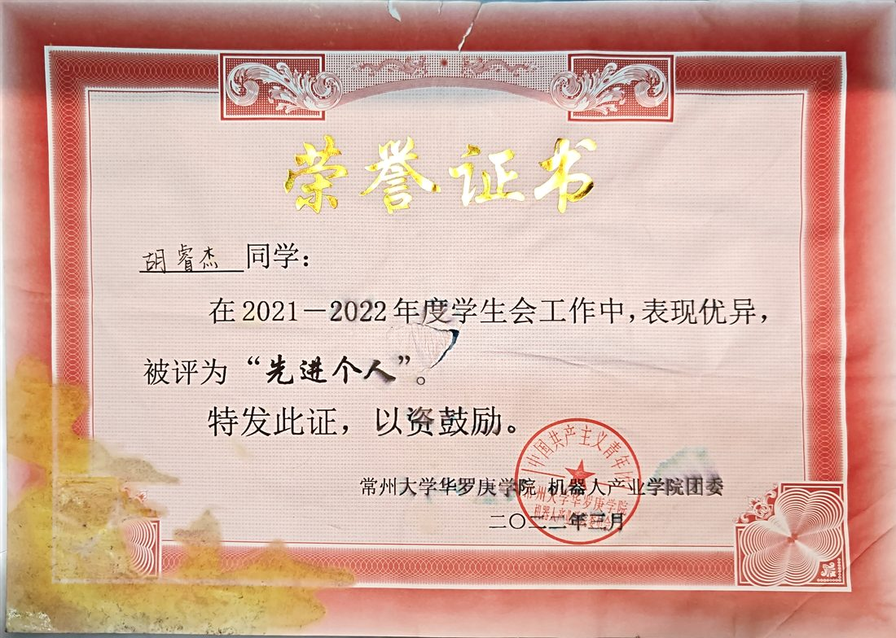
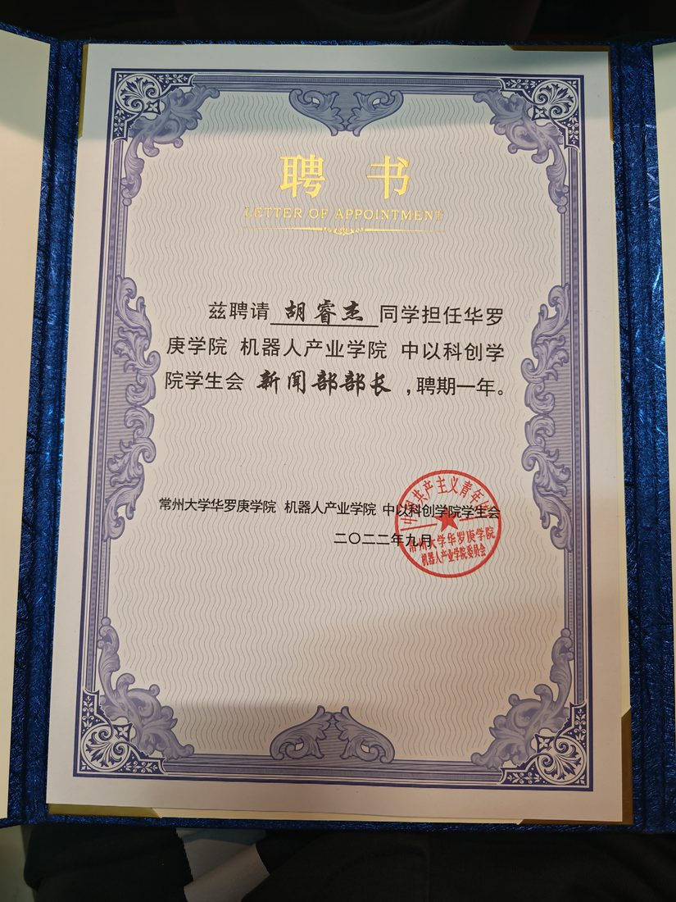
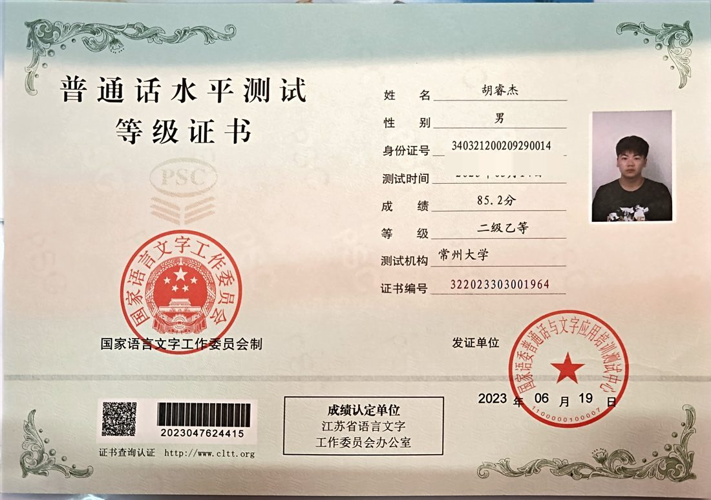
WORKS
毕业设计 · 在线可体验
条件生成对抗网络实现单幅图像去雾，Tiramisu U-Net 生成器 + PatchGAN 判别器；PyQt6 桌面演示起步，为让体验零门槛迁移上云——点进去上传一张雾图，直接看效果。
大创项目 · 2023.5 — 2024.5
基于 Unity 搭建虚拟现实场景，结合 N-Back 模型完成脑电数据采集，用 Python 完成数据分析并形成研究文章。
课程设计 · 2024.5 — 2024.6
使用 Android Studio 与 Java 开发电量测算应用，按使用场景分类记录电量异常，SQLite 落库并形成分析报告。
LIFE
数据与代码之外：网球协会社长、校园公众号主理人，视频剪辑和摄影修图也都在行。坐标上海。


CONTACT